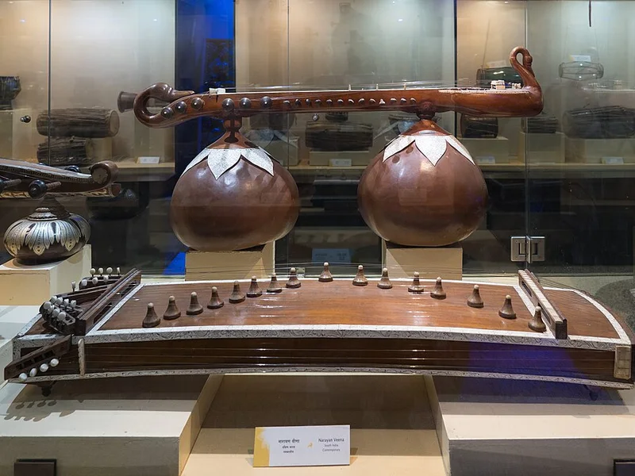
Tantri Vadya • Flagship
Saraswati Veena
7 strings over 24 brass frets on seasoned jackfruit wood. Learn meettu plucking, thala coordination, and left-hand gamaka pulls.
Whether seated on woven korai mats in our sandalwood-scented Mylapore courtyard or connecting from across the oceans with overhead fret-cameras, every student receives intimate, unhurried guidance tailored to their voice and fingers.
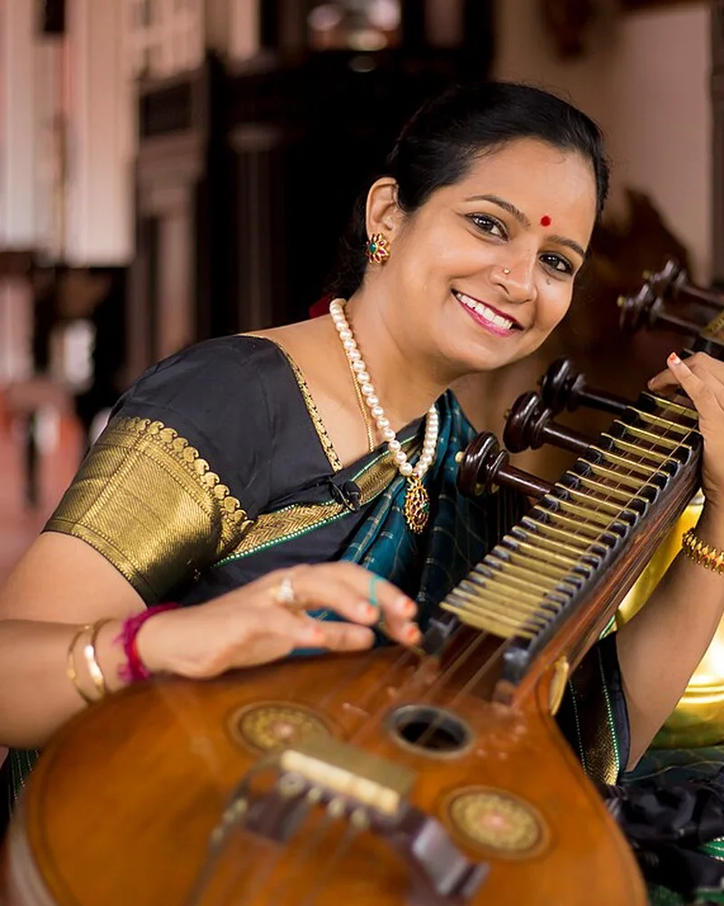
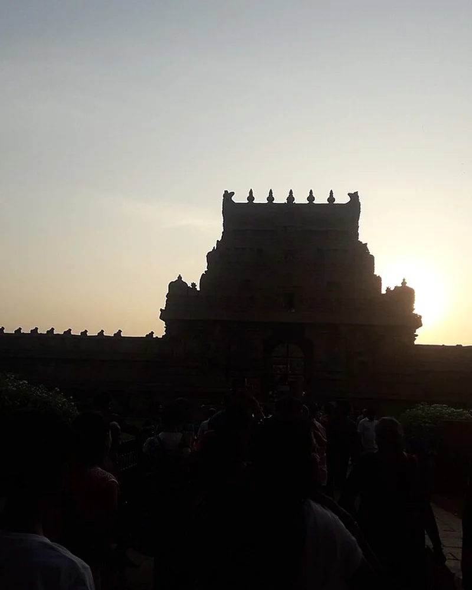
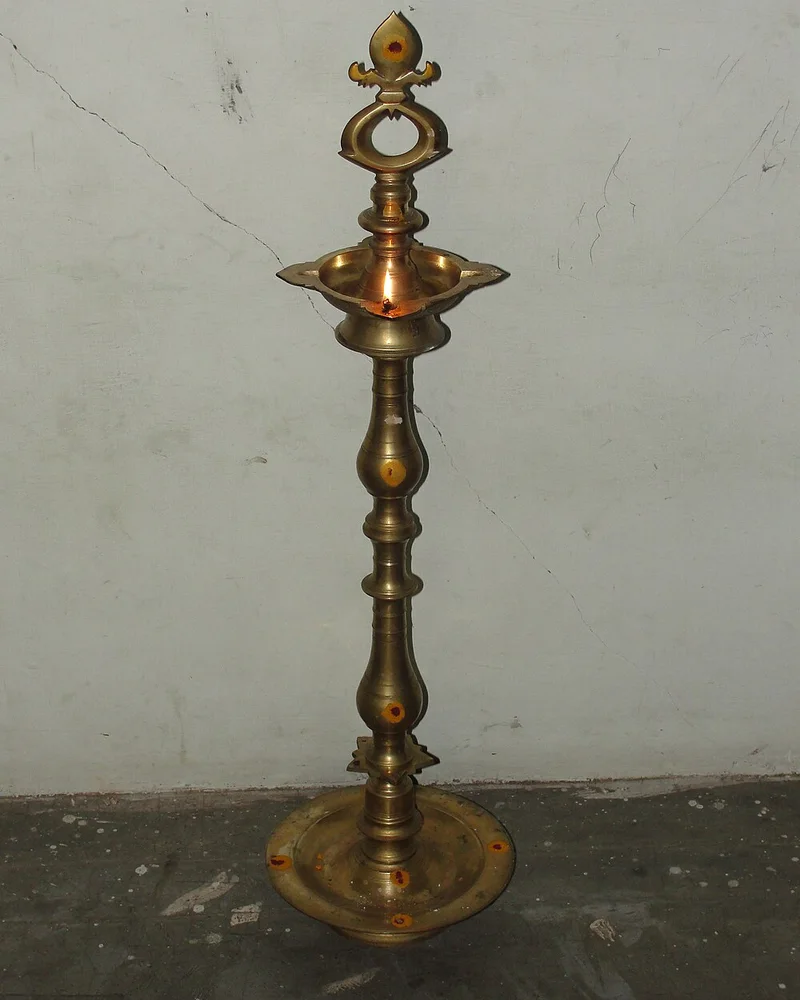
Swipe or scroll across our five specialized departments—each headed by an All India Radio graded performing artist.

7 strings over 24 brass frets on seasoned jackfruit wood. Learn meettu plucking, thala coordination, and left-hand gamaka pulls.
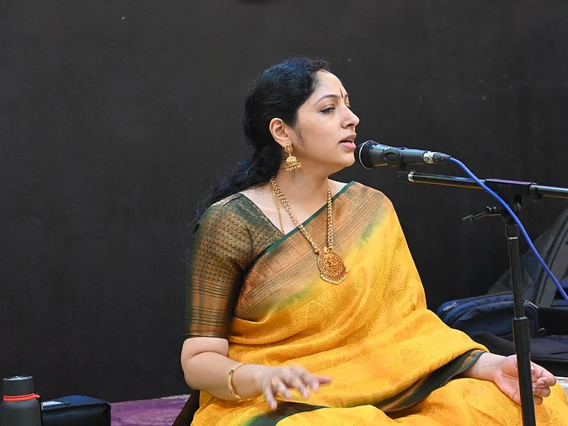
Nabhi-sthayi breath alignment, akara sadhana, brigas, and sahitya bhava across Telugu, Sanskrit, Tamil, and Kannada kritis.
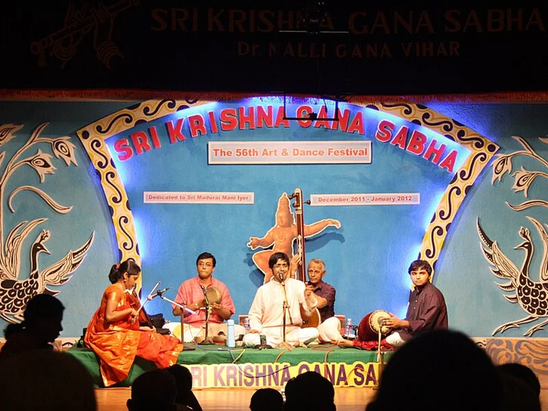
Tuned to Sa–Pa–Sa–Pa. Master continuous Gayaki bowing, single-finger slides, and the art of shadowing a main artist in kutcheris.
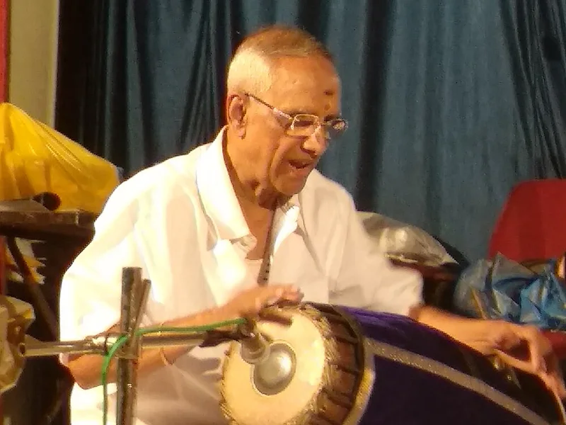
Tanjore and Pudukkottai laya traditions. Learn Valanthalai and Thoppi strokes, Korvais, Moharas, and Tani Avartanam structure.
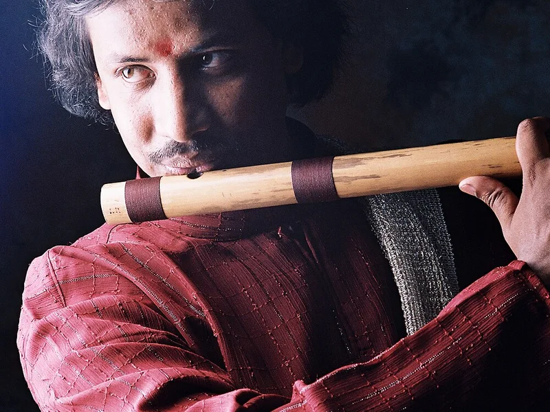
Eight-hole South Indian bamboo flute technique originated by Sarabha Sastri—producing microtonal srutis through half-hole fingering.
Select your experience tier below to inspect the exact repertoire, weekly practice commitment, and examination outcomes.
Designed for children (age 6+) and adult beginners. We focus on ergonomic seated posture without back strain, clean index-and-middle finger meettu plucking, and internalizing the 15th Melakarta scale, Raga Mayamalavagowla.
Recommended home practice: 25 minutes daily with electronic tambura set to your assigned kattai.
Tana Varnams are the backbone of veena dexterity. Students learn to sustain two-swara and three-swara deflections from a single right-hand pluck while maintaining trikala (three-speed) rhythmic stability.
For advanced performers preparing for solo Arangetrams, university diplomas, or All India Radio (AIR) auditions. Deep immersion into the five Ghana Ragas (Nata, Gowla, Arabhi, Varali, Sri) and Raga Tanam Pallavi.
Click any of the seven Carnatic swaras below to pluck a synthesized Saraswati Veena harmonic tone (Shankarabharanam / Bilawal scale) and inspect its Sanskrit name, acoustic ratio, and gamaka character.
The immutable tonic foundation born of the peacock's cry (Mayura). Never takes a flat or sharp variant.
Veena Gamaka Technique: Sustained steady Kampita or pure unadorned Dirgha tone.
Located two streets from the historic Kapaleeshwarar Temple tank, our acoustic teak-and-lime-plaster classrooms house 40+ seasoned Thanjavur jackwood veenas so local students need not carry an instrument to class.
Engineered specifically for plucked and bowed Indian instruments. Every online studio uses a dedicated overhead 4K fretboard camera plus a right-hand plucking camera with unthrottled original-sound audio.
Follow the daily rhythm of sadhana, instrument craftsmanship, lakshana study, and evening chamber concerts.
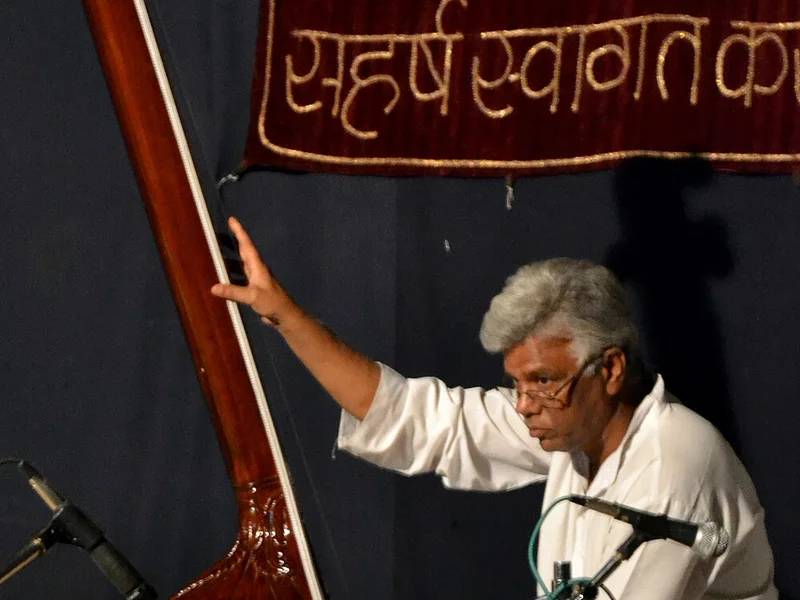
06:30 AMSenior disciples gather at dawn to tune wooden Miraj tanpuras and practice slow-tempo Sarali exercises in Raga Mayamalavagowla.
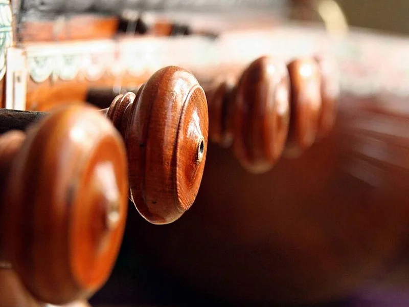
10:00 AMOur resident Thanjavur luthier inspects beeswax-and-charcoal fret ledges (melam) for microtonal 22-sruti accuracy.
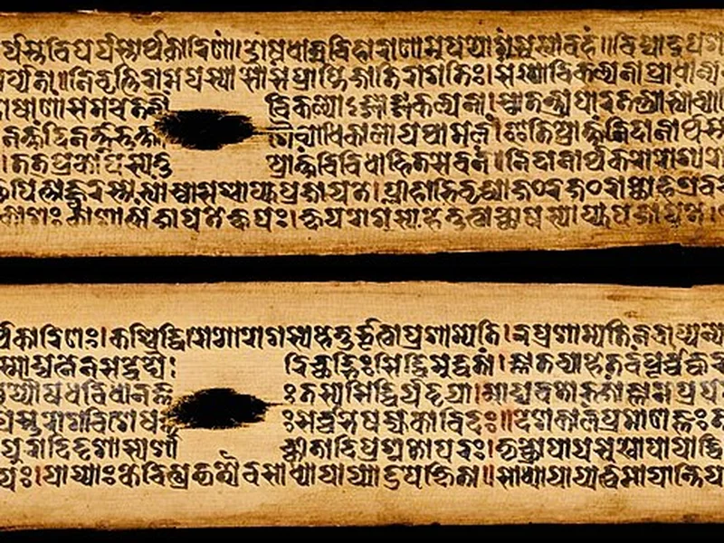
02:30 PMDiploma scholars decipher rare 19th-century palm-leaf (Olai Chuvadi) notations of Subbarama Dikshitar’s Sangita Sampradaya Pradarsini.
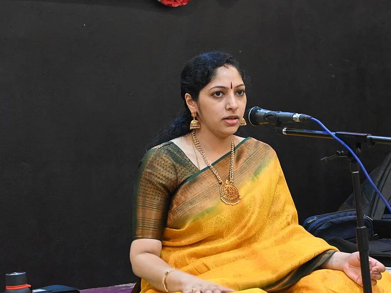
04:30 PMAfter-school batches in Mylapore run alongside evening European and morning North American online 1-on-1 lessons.
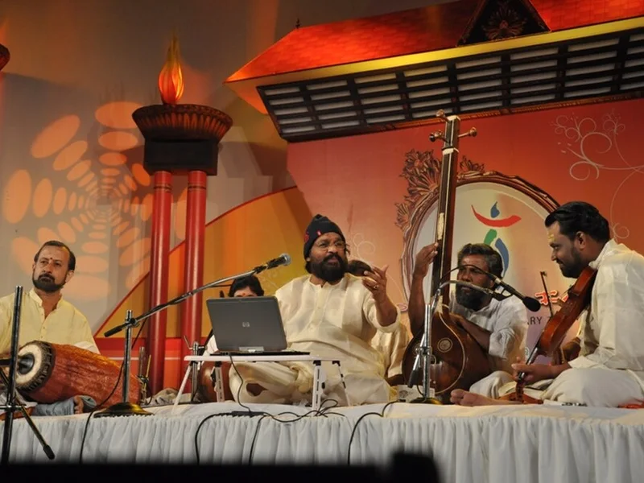
06:45 PMEvery Friday evening concludes with an unamplified student-faculty chamber recital open to Mylapore rasikas.
Unlike a single carousel, read candid notes from our global community of vainikas, vocalists, violinists, and percussionists.
“When my custom Ekantha Saraswati Veena arrived in London packed in a fiberglass flight case from Nadam’s Thanjavur workshop, every fret was already calibrated. In two years I have progressed from Geethams to Kalyani Ata Tala Varnam.”
“Vidwan Karthik Anna’s breakdown of Gayaki bowing transformed my harsh Western wrist habit into fluid Carnatic gamakas. I accompanied my first vocal arangetram in the Bay Area last month!”
“The emphasis on Sanskrit and Telugu diction in Dikshitar and Tyagaraja kritis sets this gurukulam apart. We never sing a phrase without understanding its Sahitya bhava and raga chyaya.”
“Practicing Konnakol solkattu with the interactive Tala pulse in the student dashboard keeps my Misra Chapu and Khanda Chapu rock-steady between weekly lessons.”
“My 8-year-old son started with a lightweight half-size Bala Veena recommended by the academy. He looks forward to his Saturday morning class and already plays Nottuswarams by heart.”
“As a Hindustani sitarist curious about Carnatic Ghanaraga Tanam, Vidwan Raghavan Sir’s comparative sessions opened an entirely new universe of rhythmic plucking.”
Every December, our Mylapore Mandapam hosts twelve days of dawn Tiruppavai recitals, morning lecture-demonstrations, and twilight grand kutcheris.
| Date & Kala | Featured Artist / Ensemble | Program & Raga Focus | Sabha Venue | Reservation |
|---|---|---|---|---|
| 18 Dec 2026 6:00 PM IST |
Vidushi Dr. Meenakshi Sundaram (Veena) | Inaugural Recital: Raga Shankarabharanam RTP | Mylapore Main Sabha | Book Pass |
| 21 Dec 2026 9:30 AM IST |
Vidwan Anantharaman Sastri | Lec-Dem: 22 Srutis & Gamakas on the Veena Fretboard | Archive Hall & Live Stream | Free RSVP |
| 25 Dec 2026 5:30 PM IST |
24-Veena Ensemble of Nadam Disciples | Tyagaraja Ghanaraga Pancharatna Goshti Gayanam | Kapaleeshwarar Sannidhi Courtyard | Book Pass |
| 01 Jan 2027 6:00 PM IST |
Vidushi Padmavathy Krishnan & Ensemble | New Year Mangala Isai: Dikshitar Vibhakti Kritis | Mylapore Main Sabha | Book Pass |
Authored by our faculty, this illustrated handbook includes the complete 14 Sarali Varisais in English, Tamil, and Devanagari script, right-hand meettu plucking notation symbols, and a 72 Melakarta Chakra reference poster.
Receive one essay each month on a classic Raga lakshana, rare archival veena recordings, and early-bird invitations to our Margazhi and Chitra Pournami concerts.